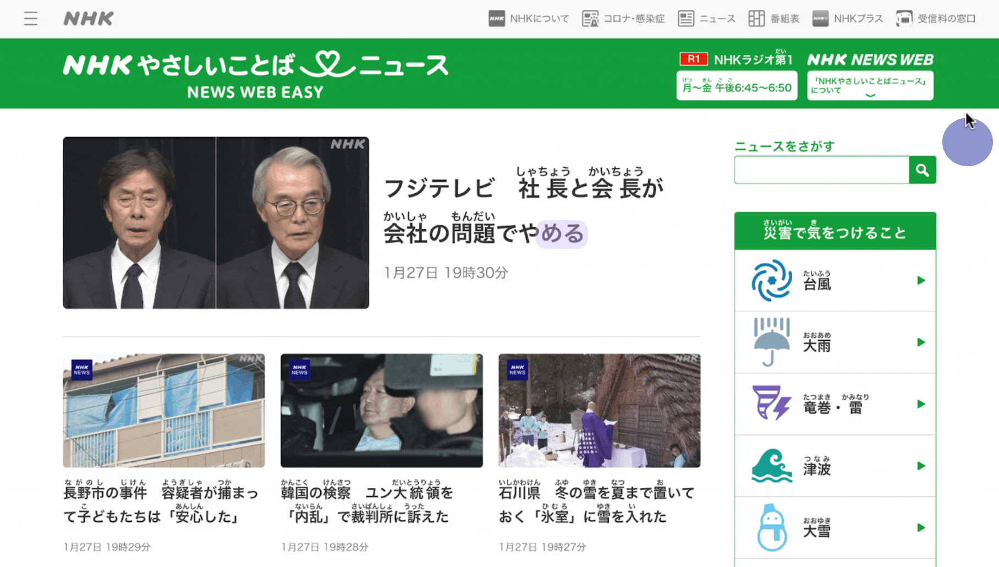
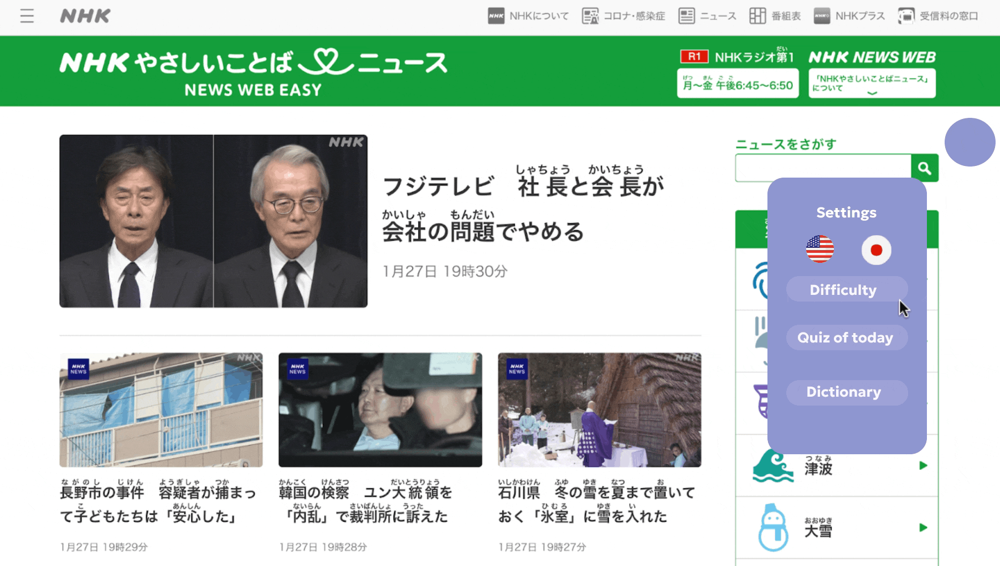
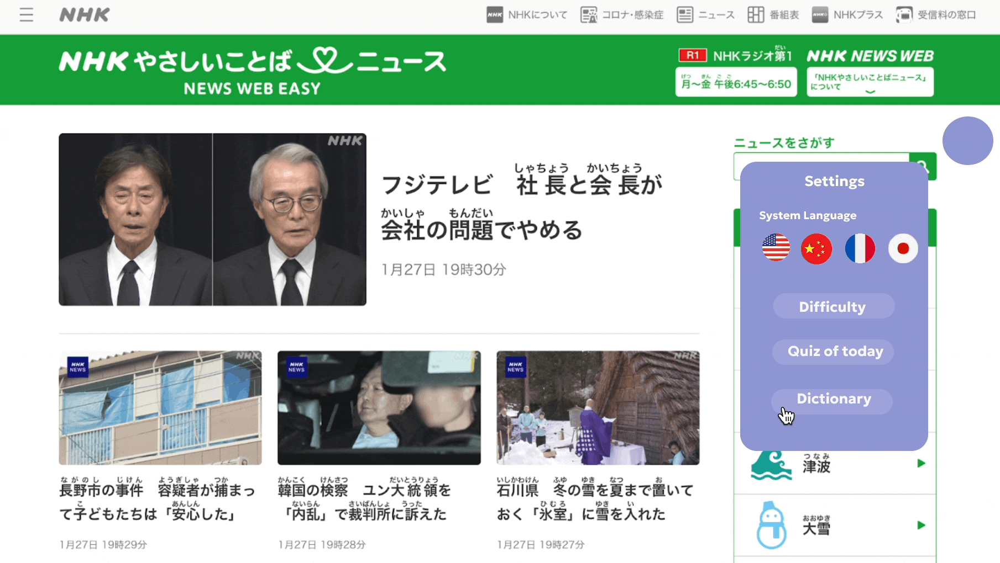
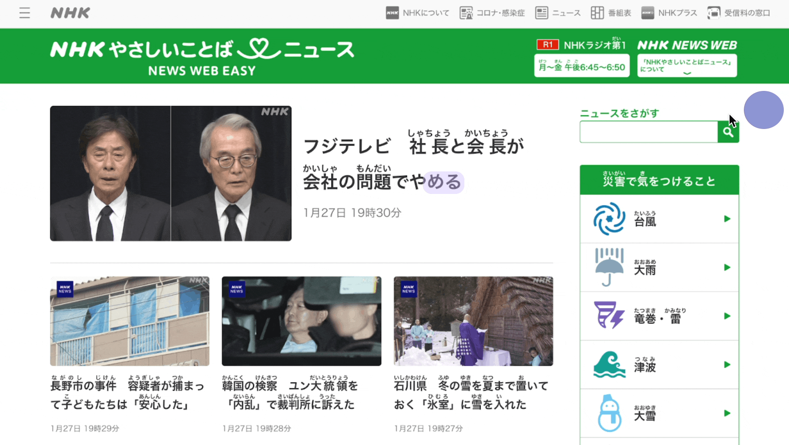

Course: CS344 Human-Computer-Interaction (Winter 2025)
Group: Chloe Xufeng, David Toledo, Emma Zhang, Ian Tarter
Problem addressed: When people use Google Translate, they don't develop the skills to navigate websites in that language. We aim to create Weblingo, a tool that helps users learn to use foreign-language websites. Unlike Google Translate, which doesn’t teach the language, or Duolingo, which lacks real-world context, WebLingo combines both benefits seamlessly.
UX Research:
Interviews: Our group did 3 Fictional Inquiries and 1 Semi-structured Interview. In Semi-Structured Interview, we focused on language-learning experiences, website navigation challenges, and usability needs.
In Fictional Inquiry, we had articipants imagined using "WebLingo," a language-learning browser extension, and sketched their ideal interface.
Analysis: We identify codes from transcripts and form a affinity diagram with sticky notes, then teh codes were classfied into themes(phenomenon, conditions, actions, consequences), and we developed codedbook based on participants response. Finally, we generate 7 key requirements (Remembering, Privacy, Cultural Relevance, Grammar, Translation, quizzes and user experience)
Prototyping:

This prototype was constructed based on my fictional Inquiry Interview. It addressed participants need of store the new wrods learned, getting context of the word, practice how the language is used (with the description of piocture they suggested), as well as the quiz section that helps memorizing.
1. Remembering: Users need to memorize words/phrases as language learners.
→ Personal setting to adjust default language, difficulty, and view personal dictionary to ensure customized remembering path.
Interaction: Click on floating icon, setting panel pops up; Click again to close.

2. Translation: : Users should be able to understand words and phrases.
→ Hover on Words for translation, so users can learn new words right away.
Interaction: while hovering on highlighted words, a popup window will show its meaning and example usage.
3. Quizzes: Users want to actively participate in the learning process and enhance memorization.
→ Quizz of today section, designed so users can participate daily and better remember words learned.
Interaction: In the 'Quiz of Today' section, users can take a quiz and receive immediate feedback on whether their answers are correct.

UX Evaluation:
Method: Co-Discovery
Interviewed:Two college student, both 20
Task & Metrics:
- Finding how to change setting language: average time 7s
- Finding how to interact with highlighted words: average time 4s
- Finishing one quiz: average time 20s
- Quiz correctness: average 50%
Process: After a brief introduction, 2 participants take turns to finish tasks on shared prototype 2. Then, they were asked to evalute their interactive experience with the prototype, identify what works and what is unclear.
Results:
Overall, users found the interface clean and functions easy to locate. They agreed that the quiz is intuitive.
But they do have some feedbacks. Fristly, regarding the interface design, they want to have movable settings button to avoid blocking content and larger settings window for better readability.
Improvement:
1. Dictionary section:
In order to better addressing user's need for remembering, I added the dictionary section in prototype 2 to keep track of personal learning history.

2. Clarify system Language:
As users reported, the language buttons indicated by flag icons was easy to find, but unclear if they changed the language of the weblingo system or the target learning language.

Future Steps:
- Movable settings Icon: They want to be able to move the icon around
- Association Function: They want a function that help them learn pronunciations.